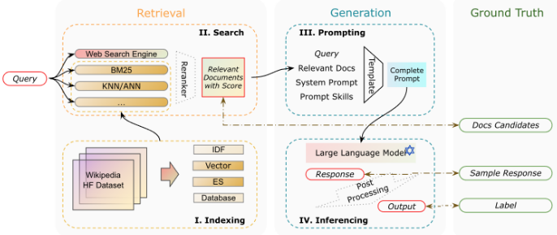
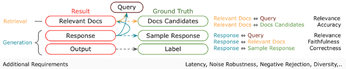

检索增强生成（RAG）评测综述
该综述针对 RAG 系统因『检索+生成』混合结构与动态外部知识源而难以评测的问题，提出 Auepora（A Unified Evaluation Process of RAG）统一评测流程，将评测组织为 Target（评什么）、Dataset（怎么评）、Metric（如何量化）三个模块，并以可评测输出与 Ground Truth 的配对定义全部评测目标。作者系统梳理并对比了 12 个 RAG 评测框架与基准（RAGAs、ARES、RGB、MultiHop-RAG、CRUD-RAG、DomainRAG 等），覆盖检索侧的相关性与准确性、生成侧的忠实性与正确性，以及延迟、多样性、噪声鲁棒性、负向拒答、反事实鲁棒性等额外需求。关键结论：传统 QA 数据集与排序类指标难以区分检索组件的贡献，需要 RAG 专属基准；用 LLM 基于实时信息自动生成 QA 对可防止模型『背题』；LLM as a Judge 虽是趋势，但在与人类判断对齐和评分尺度标准化上仍无普适方案。对团队而言，这是搭建知识库问答等 RAG 应用评测体系的直接参考。
RAG 系统由检索与生成两个组件构成并依赖动态外部知识库，其混合结构带来独特评测挑战：传统检索指标（Recall、Precision）无法完全刻画 RAG 检索的细微差异；生成侧需评估忠实性、事实正确性与相关性；整体系统还需衡量检索对生成的增益以及响应延迟等实用因素。现有基准大多只覆盖单一方面，缺乏全面、整体的分析框架。
提出 Auepora 统一评测流程：以 Evaluable Outputs（EO）与 Ground Truths（GT）的配对为基础确定评测目标，按 Target、Dataset、Metric 三个模块组织评测。据此梳理 12 个评测框架/基准，归纳检索侧指标（非排序类 Precision/Recall/F1，排序类 MAP@K、MRR@K）与生成侧指标（BLEU、ROUGE、F1、LLM as a Judge），并总结 5 项额外需求的度量方式（单查询延迟、余弦相似度衡量多样性、Misleading Rate、Rejection Rate、Error Detection Rate 等）；同时分析数据集构建策略：复用 KILT、SuperGLUE 等既有数据集，或用 LLM 基于新闻、高校招生网站等实时信息自动生成 QA 对以测试动态知识场景。
系统梳理并对比了 12 个 RAG 评测框架/基准（截至 2024 年 6 月），包括 RAGAs、ARES、RGB、MultiHop-RAG、CRUD-RAG、CDQA、DomainRAG、ReEval、FeB4RAG、WikiEval 等
提出 Auepora 统一评测流程，将评测组织为 Target、Dataset、Metric 三个模块，并以 EO 与 GT 配对定义全部评测目标
归纳出 5 项额外评测需求及其度量：Latency（单查询延迟）、Diversity（余弦相似度/距离）、Noise Robustness（Misleading Rate、Mistake Reappearance Rate）、Negative Rejection（Rejection Rate）、Counterfactual Robustness（Error Detection Rate）
未在论文中说明（本文为综述，未报告自建实验的量化对比结果）
与以往主要收集 RAG 方法或数据集的综述不同，本文聚焦『评测』这一维度，提出以 EO-GT 配对为核心的统一评测流程 Auepora，把分散的评测目标、数据集与指标纳入同一框架进行系统对比；并明确指出传统排序类检索指标不完全适用于 RAG，需要 RAG 专属的检索评测指标。
相关度级别：high
命中能力域：3.1 上下文工程与记忆 | 3.5 评测与可靠使用
理由：RAG/检索增强是 3.1 域明确列出的核心技术，知识库问答是团队的代表场景；本文直接命中 3.5 域的『LLM 应用评测基准与方法』，为团队搭建 RAG 评测体系提供完整的指标清单（检索相关性/准确性、生成忠实性/正确性）、基准选型（RAGAs、ARES、RGB、CRUD-RAG 等）与数据集构建方法；其对 LLM as a Judge 局限与资源成本的分析，对团队自建自动评测流程有直接警示价值。
建议动作：深入精读并做内部分享
arXiv:2405.07437v2 [cs.CL] 2024年7月3日
检索增强生成的评估：综述
Hao Yu 1, 2, Aoran Gan 3, Kai Zhang 3, Shiwei Tong 1†, Qi Liu 3, Zhaofeng Liu 1
1 腾讯公司
2 麦吉尔大学
3 中国科学技术大学认知智能国家重点实验室
hao.yu2@mail.mcgill.ca gar@mail.ustc.edu.cn {shiweitong†, zhaofengliu}@tencent.com {kkzhang08, qiliuql}@ustc.edu.cn
摘要：检索增强生成（Retrieval-Augmented Generation, RAG）近来在自然语言处理领域备受关注。众多研究与实际应用正在利用其通过外部信息检索来增强生成模型的能力。然而，由于 RAG 系统的混合结构及其对动态知识源的依赖，评估这些系统面临着独特的挑战。为了更好地理解这些挑战，我们开展了 RAG 统一评估流程（A Unified Evaluation Process of RAG, Auepora），旨在对 RAG 系统的评估与基准测试（benchmark）进行全面概述。具体而言，我们在现有 RAG benchmark 中考察并比较了检索（Retrieval）与生成（Generation）组件的若干可量化指标，例如相关性、准确性和忠实性，并涵盖了可能的输出与真实值（ground truth）配对。随后，我们分析了各类数据集与指标，讨论了现有 benchmark 的局限性，并提出了推动 RAG benchmark 领域发展的潜在方向。
检索增强生成（Retrieval-Augmented Generation，RAG）[34] 通过融合信息检索技术，有效提升了生成式语言模型的性能。它解决了独立生成式语言模型所面临的一个关键挑战：倾向于生成看似合理却可能缺乏事实依据的回答。通过从外部来源检索相关信息，RAG 显著降低了幻觉 [23] 或事实性错误输出的发生率，从而提升了内容的可靠性与丰富性。[73] 这种检索与生成能力的融合，使得所生成的回答不仅符合上下文，而且基于可获得的最新、最准确的信息，使 RAG 成为在追求更智能、更通用语言模型道路上的一项进展 [73,64]。
† 通讯作者
论文主页：https://github.com/YHPeter/Awesome-RAG-Evaluation
2
自大语言模型（Large Language Models，LLMs）问世以来，从不同视角对 RAG 系统的研究大量涌现 [55,45,59,42,41,69,16]。RAG 系统由两个主要组件构成：检索（Retrieval）与生成（Generation）。检索组件旨在从各类外部知识源中提取相关信息，它包含两个主要阶段：索引（indexing）与搜索（searching）。索引阶段对文档进行组织以便实现高效检索，稀疏检索采用倒排索引，稠密检索则采用稠密向量编码 [16,12,28]。搜索组件利用这些索引根据用户查询获取相关文档，并通常引入可选的重排序器（rerankers）[4,39,6,52] 来优化所检索文档的排序。生成组件利用检索到的内容和问题查询，通过提示（prompting）与推理（inferencing）阶段构建连贯且与上下文相关的回答。凭借 LLMs 的“涌现”（Emerging）能力 [59] 以及在对齐人类指令方面的突破 [42]，LLMs 是生成阶段性能最优的模型选择。诸如思维链（Chain of Thought，CoT）[60]、思维树（Tree of Thgouht）[65]、Rephrase and Respond（RaR）[8] 等提示方法能够引导产生更好的生成结果。在推理步骤中，LLMs 解读经提示的输入，生成准确且深入的回答，这些回答与查询意图相符并整合了所提取的信息 [35,9]，而无需进一步的微调，例如全量微调 [16,1,67,68] 或 LoRA [21]。附录 A 详细描述了完整的 RAG 结构。图 1 展示了上述 RAG 系统的结构。

对 RAG 进行评估的重要性正随着 RAG 专用方法的进步而同步提升。一方面，RAG 是一个与特定需求和语言模型紧密交织的复杂系统，由此产生了多种多样的评估方法、指标和工具，尤其是在大语言模型（LLM）生成具有黑盒特性的情况下。评估 RAG 系统既涉及具体组件，也涉及整体系统评估的复杂性。另一方面，外部动态数据库以及诸如内容创作或开放域问答等各种下游任务 [16,70] 进一步加剧了 RAG 系统的复杂性。这些挑战使得开发能够有效捕捉检索准确性与生成质量之间相互作用的全面评估指标成为必然 [2,7]。为了进一步厘清相关要素，我们尝试填补该领域当前存在的空白，这与以往主要收集特定 RAG 方法或数据的 RAG 综述 [74,16,24] 有所不同。我们汇总整理了 12 个不同的评估框架，涵盖了 RAG 系统的诸多方面。遵循构建基准测试（benchmark）的流程，我们围绕这些 benchmark 中提及的目标、数据集和指标展开分析，并将其归纳为 RAG 统一评估流程（A Unified Evaluation Process of RAG，Auepora）的三个对应阶段。
3
在本文中，我们的贡献包括以下几个方面：
评估混合式 RAG 系统需要同时对检索、生成以及 RAG 系统整体进行评估。这些评估是多层面的，需要仔细的考量与分析。其中每一项都包含特定的困难，使得为 RAG 系统开发全面的评估框架和基准测试（benchmark）变得复杂。
**检索** 检索组件对于获取为生成过程提供依据的相关信息至关重要。一个主要挑战在于潜在知识库的动态性与庞大规模，其范围涵盖从结构化数据库到整个万维网。这种庞大规模要求评估指标能够在给定查询的上下文中有效衡量所检索文档的精确率、召回率和相关性 [52,32]。此外，信息的时间维度——即数据的相关性和准确性可能随时间发生变化——为评估过程增添了另一层复杂性 [6]。另外，信息来源的多样性以及检索到误导性或低质量信息的可能性，给评估过滤并选择最相关信息的效果带来了重大挑战 [39]。传统的检索评估指标（如 Recall 和 Precision）无法完全捕捉 RAG 检索系统的细微差别，因此有必要开发更细致且针对特定任务的评估指标 [49]。
4 Hao Yu, Aoran Gan, Kai Zhang, Shiwei Tong † , Qi Liu, and Zhaofeng Liu
**生成** 生成组件由大语言模型（LLM）驱动，基于检索到的内容生成连贯且符合上下文的响应。这里的挑战在于评估生成内容相对于输入数据的忠实性与准确性。这不仅涉及评估响应的事实正确性，还涉及评估其与原始查询的相关性以及所生成文本的连贯性 [75,49]。某些任务（如创意内容生成或开放式问答）所具有的主观性进一步增加了评估的复杂性，因为它使得何为“正确”或“高质量”响应存在变异性 [48]。
**RAG 系统整体** 评估整个 RAG 系统会带来额外的复杂性。检索组件与生成组件之间的相互作用意味着，仅通过孤立地评估各个组件无法充分理解整个系统的性能 [49,14]。系统需要就其有效利用检索到的信息以提升响应质量的能力接受评估，这涉及衡量检索组件为生成过程带来的附加价值。此外，响应延迟以及处理模糊或复杂查询的能力等实际考量，对于评估系统的整体有效性和可用性也至关重要 [39,6]。
结论 评估目标从传统的绝对数值指标向多源、多目标生成评估的转变，加之检索组件与生成组件之间错综复杂的相互作用，都带来了重大挑战。[5,50] 在动态数据库中进行检索可能产生误导性结果或与事实相矛盾。能够准确反映真实世界场景的多样化且全面的数据集至关重要。在指标方面同样存在挑战，涵盖针对不同下游任务的生成式评估标准、人类偏好，以及 RAG 系统内部的实用性考量。以往的大多数 benchmark 主要解决 RAG 评估中的一个或若干个方面，但缺乏全面、整体的分析。
为了帮助读者更深入地理解 RAG 基准测试（benchmark），我们提出了 RAG 统一评估流程（A Unified Evaluation Process of RAG，Auepora），该流程聚焦于基准测试的三个关键问题：评估什么（What to Evaluate）？如何评估（How to Evaluate）？如何度量（How to Measure）？它们分别对应 Target（评估目标）、Dataset（数据集）和 Metric（指标）。我们旨在为读者提供一种清晰且易于理解的方式，以把握 RAG 基准测试中的复杂性与细微差别。
Target 模块旨在确定评估方向。Dataset 模块有助于对 RAG 基准测试中各种数据构建方式进行比较。最后一个模块 Metrics 则引入与评估中使用的特定目标和数据集相对应的各项指标。总体而言，该流程的设计目的是通过在起始阶段覆盖“可评估输出”（Evaluable Outputs，EOs）与“基准真值”（Ground Truths，GTs）之间所有可能的配对，提供一种从多个方面评估 RAG 系统有效性的系统化方法。在接下来的小节中，我们将对 Auepora 进行详尽阐述，并利用它来介绍和比较各种 RAG 基准测试。
5

在 RAG 系统中，EOs 与 GTs 的组合能够生成所有可能的评估目标，这正是 Auepora 的基本概念（如图 1 所示）。这些目标一经确定，便可以基于特定的 EOs 配对或 EO 与 GT 的配对来加以定义，如图 2 所示，并用于分析当前 RAG 基准测试的各个方面。
检索（Retrieval） 用于评估检索组件的 EOs 是依据查询而确定的相关文档。据此，我们可以为检索组件构建两种成对关系，即相关文档（Relevant Documents）↔ 查询（Query）、相关文档（Relevant Documents）↔ 候选文档（Documents Candidates）。
生成（Generation） 生成组件的类似成对关系列举如下。此处的 EOs 是生成的文本以及经过表述的结构化内容。随后，我们需要将这些 EOs 与所提供的 GTs 和标签进行比较。
6 Hao Yu, Aoran Gan, Kai Zhang, Shiwei Tong † , Qi Liu, and Zhaofeng Liu
上文介绍了检索与生成组件的评估目标。表 1 列出了截至 6 月
| Category | Framework | Time | Raw Targets | Retrieval | Generation |
|---|---|---|---|---|---|
| Tool | TruEra RAG Triad [54] | 2023.1 | Context Relevance Answer Relevance Groundedness | LLM as a Judge | LLM as a Judge |
| Tool | LangChain Bench. [32] | 2023.11 | Accuracy Faithfulness Execution Time Embed. CosDistance | Accuracy | LLM as a Judge |
| Tool | Databricks Eval [33] | 2023.12 | Correctness Readability Comprehensiveness | - | LLM as a Judge |
| Benchmark | RAGAs [14] | 2023.09 | Context Relevance Answer Relevance Faithfulness | LLM as a Judge | LLM Gen + CosSim LLM as a Judge |
| Benchmark | RECALL [38] | 2023.11 | Response Quality Robustness | - | BLEU, ROUGE-L |
| Benchmark | ARES [49] | 2023.11 | Context Relevance Answer Faithfulness Answer Relevance | LLM + Classifier | LLM + Classifier LLM + Classifier |
| Benchmark | RGB [6] | 2023.12 | Information Integration Noise Robustness Negative Rejection Counterfactual Robustness | - | Accuracy |
| Benchmark | MultiHop-RAG [52] | 2024.01 | Retrieval Quality Response Correctness | MAP, MRR, Hit@K | LLM as a Judge |
| Benchmark | CRUD-RAG [39] | 2024.02 | CREATE , READ UPDATE , DELETE | - | ROUGE, BLEU RAGQuestEval |
| Benchmark | MedRAG [61] | 2024.02 | Accuracy | - | Accuracy |
| Benchmark | FeB4RAG [57] | 2024.02 | Consistency Correctness Clarity Coverage | - | Human Evaluation Human Evaluation |
| Benchmark | CDQA [62] | 2024.03 | Accuracy | - | F1 |
| Benchmark | DomainRAG [58] | 2024.06 | Correctness Faithfulness Noise Robustness Structural Output | - | F1, Exact-Match Rouge-L LLM as a Judge |
| Benchmark | ReEval [66] | 2024.06 | Hallucination | - | F1, Exacct-Match LLM as a Judge Human Evaluation |
| Research | FiD-Light [20] | 2023.07 | Latency | - | - |
| Research | Diversity Reranker [4] | 2023.08 | Diversity | Cosine Distance | - |
| Category | Framework | Time | Raw Targets | Retrieval | Generation |
7
2024 年关于改进和评估 RAG 及其基准测试的相关工作。表 1 描绘了这一信息，其中每项评估标准都以不同的颜色表示。例如，位于倒数第四位的 FeB4RAG [57] 基于 [17] 提出了四项标准，包括一致性（Consistency）、正确性（Correctness）、清晰性（Clarity）和覆盖度（Coverage）。正确性（Correctness）等同于检索中的准确性（accuracy），而一致性（Consistency）则相当于生成组件中的忠实性（faithfulness）。检索中的准确性衡量的是所检索信息的正确性，而我们认为覆盖度（Coverage）关乎覆盖率，与多样性的关联更为密切。因此，我们认为覆盖度（Coverage）与多样性相关联，并且是我们所提出的评估框架中的一项附加要求，该框架将在后文介绍。其余的标准——清晰性（Clarity）——在我们提出的框架中同样被归为附加要求。其他工具和基准测试也以类似方式处理。
工具与基准测试在评估 RAG 系统数据集方面提供了不同程度的灵活性。工具仅指定评估目标，提供了一个灵活通用的框架，能够构建完整的 RAG 应用与评估流水线，如 [54,32,33] 等工作所示。而基准测试则关注 RAG 评估的不同方面，并各自特别侧重于检索输出或生成目标。例如，RAGAs [14] 和 ARES [49] 评估检索文档的相关性，而 RGB 和 MultiHop-RAG [6,52] 则以准确性为首要关注点，因而需要与 GTs 进行比较。[66] 则聚焦于幻觉（Hallucination），它是忠实性与正确性的结合。由于生成目标在 RAG 系统中具有关键作用，所有基准测试都将其纳入考量，只是各自的关注领域有所不同。
附加要求 除了评估上述两个主要组成部分之外，一部分研究工作还涉及了 RAG 的一些附加要求（表 2 中以黑色和斜体标示的目标）。这些要求如下：
作为例外，CRUD-RAG [39] 引入了一个全面的基准测试，涵盖了问答之外更广泛的 RAG 应用范围，并将其划分为创建（Create）、读取（Read）、更新（Update）和删除（Delete）四类场景。该基准测试在多种任务上对 RAG 系统进行评估，包括文本续写、问答、幻觉修改以及多文档摘要。它为在不同场景下优化 RAG 技术提供了见解。DomainRAG [58] 为 RAG 系统识别出六种复杂能力：对话、结构化信息、忠实性、去噪、时间敏感问题求解以及多文档理解。ReEval [66] 则专门针对幻觉评估，采用了一个经济高效的基于大语言模型（LLM）的框架，该框架利用提示链（prompt chaining）来创建动态测试用例。
8
| Benchmark | Dataset |
|---|---|
| RAGAs [14] | WikiEval |
| RECALL [38] | EventKG [19], UJ [22] |
| ARES [49] | NQ [29], Hotpot [63], FEVER [53], WoW[11], MultiRC [10], ReCoRD [71] |
| RGB [6] | Generated (Source: News) |
| MultiHop-RAG [52] | Generated (Source: News) |
| CRUD-RAG [39] | Generated (Source: News) UHGEval [36] |
| MedRAG [61] | MIRAGE |
| FeB4RAG [57] | FeB4RAG, BEIR [26] |
| CDQA [62] | Generation (Source: News), Labeller |
| DomainRAG [58] | Generation (Source: College Admission Information) |
| ReEval [66] | RealTimeQA[27], NQ [15,29]) |
| Benchmark | Dataset |
在表2中，不同的基准测试采用了各异的数据集构建策略，范围涵盖从利用现有资源到针对特定评估方面生成全新数据。若干基准测试借用了 KILT（Knowledge Intensive Language Tasks，知识密集型语言任务）基准测试 [44] 的一部分（Natural Questions [29]、HotpotQA [63] 和 FEVER [53]）以及其他成熟数据集，例如 SuperGLUE [56]（MultiRC [10] 和 ReCoRD [71]）[49]。然而，使用此类数据集的缺点在于无法解决动态真实场景中的挑战。类似的情况也可见于由 RAGAs [14] 构建的 WikiEval，该数据集基于 2022 年之后的维基百科页面。
强大 LLM 的出现彻底改变了数据集构建的过程。利用这些框架，作者现在能够针对特定评估目标设计查询和标准答案（ground truth），从而轻松地以所需格式创建数据集。RGB、MultiHop-RAG、CRUD-RAG 和 CDQA [6,52,39,62] 等基准测试进一步推进了这一做法，它们利用在线新闻文章构建自己的数据集，以测试 RAG 系统处理超出语言模型（LM）框架训练数据范围的真实世界信息的能力。最近，DomainRAG [58] 将多种类型的问答（QA）数据集与单文档、多文档、单轮和多轮等形式相结合。这些数据集由大学网站上每年变化的招生与入学信息生成，这迫使 LLM 必须使用所提供且已更新的信息。
9
总而言之，数据集的创建与选择对于评估 RAG 系统至关重要。针对特定指标或任务定制的数据集能够提高评估的准确性，并指导开发能够适应真实世界信息需求的 RAG 系统。
在评估 RAG 系统这一错综复杂的领域中前行，需要对能够精确量化评估目标的指标有细致入微的理解。然而，创建既符合人类偏好又能兼顾实际考量的评估标准颇具挑战性。RAG 系统中的每个组件都需要一种量身定制的评估方法，以反映其独特的功能与目标。
检索指标：各种目标都可以使用与给定数据集相对应的多种指标进行评估。本节将介绍几种常用的针对检索目标和生成目标的指标。针对额外需求的指标也可以在这些常用指标中找到。更为专门设计的指标可以表 1 为参考，在原始论文中进一步查阅。
对于检索评估而言，重点在于能够准确捕捉针对查询所检索信息的相关性、准确性、多样性与鲁棒性的指标。这些指标不仅要反映系统获取相关信息的精确性，还要反映其在动态、浩瀚且有时充满误导性的可用数据环境中穿行的韧性。在 [38] 基准测试（benchmark）中采用 Misleading Rate、Mistake Reappearance Rate 和 Error Detection Rate 等指标，凸显了对 RAG 系统固有复杂性的高度关注。将 MAP@K、MRR@K 以及 Tokenization with F1 融入 [52,62] 等 benchmark，则反映出对传统检索多方面评估理解的不断深化。而 [17] 也强调，这种基于排序的评估方法并非不适用于 RAG 系统，并且应当有更多 RAG 专用的检索评估指标。这些指标不仅捕捉检索系统的精确率与召回率，还考虑了所检索文档的多样性与相关性，与 RAG 系统中信息需求的复杂而动态的特性相契合。如 [14] 所示，引入 LLM 作为评估裁判，进一步凸显了检索评估的适应性与多功能性，为评估检索质量提供了一种全面且具备上下文感知的方法。
非基于排序的指标通常评估二元结果——即某个条目是否相关——而不考虑该条目在排序列表中的位置。请注意，下面的公式只是这些指标的一种形式，每个指标的定义可能因评估任务的不同而有所差异。
其中 TP 表示真正例，FP 表示假正例。
10
其中 RD 表示相关文档，Top kd 表示检索到的前 k 篇文档。
基于排序的指标评估相关条目呈现的顺序，并更加重视相关条目在排序列表中的位置。
其中 | Q | 表示查询的数量，rank i 表示第 i 个查询的第一个相关文档的排序位置。
其中 P ( k ) 为列表中截断位置 k 处的精确率，rel ( k ) 为指示函数，当排名为 k 的条目是相关文档时取值为 1，否则为 0，n 为检索到的文档数量。
生成指标 在生成领域，评估已超越生成回答的单纯准确性，进而深入到文本在连贯性、相关性、流畅性以及与人类判断一致性等方面的质量。这就需要能够评估语言生成中细微方面的指标，包括事实正确性、可读性以及用户对生成内容的满意度。BLEU、ROUGE 和 F1 Score 等传统指标继续发挥着至关重要的作用，凸显了精确率与召回率在决定回答质量方面的重要性。然而，误导率（Misleading Rate）、错误重现率（Mistake Reappearance Rate）和错误检测率（Error Detection Rate）等指标的出现，反映出人们对 RAG 系统所面临独特挑战的理解在不断深化 [38]。
人工评估仍然是比较生成模型彼此之间性能、或将其与标准答案（ground truth）进行比较的非常重要的标准。采用 LLM 作为评估裁判 [75] 的方法是一种灵活且自动化的质量评估方法，适用于传统标准答案可能难以获取的情形 [14]。该方法得益于对预测驱动推断（prediction-powered inference, PPI）和上下文相关性评分的运用，为评估 LLM 的输出提供了一个细致的视角。[49] 策略性地使用详细的提示模板可确保评估在引导下进行并与人类偏好保持一致，从而有效地使各内容维度上的评估实现标准化 [1]。这种转向利用 LLM 充当仲裁者的做法，标志着向自动化且能响应上下文的评估框架迈出的重要进展，并在极少依赖参考答案比较的情况下丰富了评估格局。
11
附加要求 这些附加要求，例如延迟、多样性、噪声鲁棒性、负向拒绝（negative rejection）和反事实鲁棒性，用于确保 RAG 系统在符合人类偏好的真实世界场景中的实际适用性。本节深入探讨用于评估这些附加要求的指标，强调其在 RAG 系统综合评估中的重要性。
延迟衡量 RAG 系统完成一个查询响应所需的时间。它是用户体验的关键因素，尤其是在聊天机器人或搜索引擎等交互式应用中 [20]。单查询延迟（Single Query Latency）：处理单个查询所需的平均时间，包括检索和生成两个阶段。
12
多样性（Diversity）评估 RAG 系统所检索和生成的信息的多样性与广度。它确保系统能够提供广泛的观点，并避免回答中的冗余 [4]。余弦相似度 / 余弦距离（Cosine Similarity / Cosine Distance）：余弦相似度/距离计算检索到的文档或生成的回答的嵌入。[30] 较低的余弦相似度得分表示较高的多样性，表明系统能够检索或生成更广泛的信息。
噪声鲁棒性（Noise Robustness）衡量 RAG 系统在不损害回答质量的前提下处理无关或误导性信息的能力 [38]。文献 [38] 描述了误导率（Misleading Rate）和错误重现率（Mistake Reappearance Rate）这两个指标，并针对特定数据集和实验设置提供了详细描述。[58]
负向拒绝（Negative Rejection）评估系统在可用信息不足或过于模糊而无法给出准确回答时拒绝作答的能力 [6]。拒绝率（Rejection Rate）：系统不生成回答的比率。
反事实鲁棒性（Counterfactual Robustness）反事实鲁棒性评估系统识别并忽略检索文档中不正确或反事实信息的能力 [39]。错误检测率（Error Detection Rate）：在检索信息中检测到的反事实陈述所占的比例。
对于 RAG 系统而言，传统的问答（QA）数据集和指标仍然是常见的交互形式。[14,49,38,6,61,62,58,66] 虽然这些能够对 RAG 的能力提供基本验证，但当面对能够在 QA 基准测试（benchmark）中表现出色的强大语言模型（LLMs）时，要区分检索组件的影响就变得颇具挑战。为了全面评估整个 RAG 系统的性能，需要多样化且专门面向 RAG 的基准测试。多篇论文为改进 QA 格式的基准测试提供了指导，包括问题类型的变化：从简单的维基百科填空问题到多跳问题 [52]、多文档问题 [66]，以及从单轮到多轮对话 [39,58]。对于答案而言，在评估相关性、忠实性和正确性时，可以考虑结构化输出 [58]、内容审核 [6,54] 和幻觉 [66] 等方面。除此之外，RAG 系统还需要满足一些额外要求，例如对噪声文档的鲁棒性、语言表达、延迟和结果多样性。[32,33,38,6,39,57,58,20,4] 此外，还需要针对涉及中间输出和检索文档的性能变化，以及检索指标与最终生成输出之间的关系与分析开展研究。
在数据集方面，由于不同 RAG 基准测试具有面向特定目标的性质，创建通用数据集颇具挑战。定制化数据集 [14,38,49,39,57] 对于深入评估必不可少，但这种方法增加了所需的工作量和资源。此外，数据集的多样性——从新闻文章到结构化数据库 [66]——既体现了 RAG 系统所需的适应性，也给简化评估带来了障碍。近来，凭借 LLM 的前沿性能，复杂数据处理和自动 QA 对生成可以实现自动化，从而达到每日甚至更细粒度的时间分辨率，这既能防止 LLM 作弊，又能评估 RAG 系统在快速变化数据下的鲁棒性。[6,52,39,62,58,66]
13
在指标方面，使用 LLM 作为自动评估裁判代表了一种蓬勃发展的趋势；与人工评估相比，它有望借助大规模推理为生成输出带来多样性与深度。然而，使用"LLMs as a Judge"[75] 来评估回复时，在与人类判断保持一致、建立有效的评分量表以及在多样化用例中实施一致评估等方面存在挑战。在正确性、清晰度和丰富度的判定上，自动化评估与人工评估可能存在差异。此外，基于示例的评分效果可能参差不齐，且不存在普遍适用的评分量表和提示文本，这使得"LLM as a Judge"的标准化变得复杂。[33]
除了上述挑战之外，还需要考虑使用大语言模型（Large Language Model, LLM）进行数据生成与验证所带来的资源密集性问题 [76]。RAG 基准测试必须在全面评估的需求与计算资源有限的实际约束之间取得平衡。因此，理想的方案是开发能够在使用较少数据量的情况下有效评估 RAG 系统、同时保持结果有效性与可靠性的评估方法。
本综述系统性地探讨了评估检索增强生成（RAG）系统的复杂性，重点指出了评估其性能时所面临的挑战。通过所提出的 A Unified Evaluation Process of RAG，我们概述了一种用于分析 RAG 评估的结构化方法，聚焦于评估目标、数据集与度量指标。我们的分析强调，需要既能够反映检索精度与生成质量之间动态交互关系、又兼顾真实世界应用实际考量的针对性基准测试（benchmark）。通过识别现有方法中的空白并提出未来研究方向，我们旨在为构建更有效、更贴合用户需求的 RAG 系统基准测试做出贡献。
14
图1中 RAG 系统的检索组件可分为三类：稀疏检索、稠密检索 [77] 以及网络搜索引擎。评估的标准是输出带有数值分数或排名的相关文档。
在神经网络出现之前，稀疏检索被广泛用于检索相关文本内容。诸如 TF-IDF [46] 和 BM25 [47] 之类的方法依赖于关键词匹配和词频，但可能会遗漏没有关键词重叠的语义相关文档。
通过利用 BERT [9] 等深度学习模型，稠密检索能够捕捉文本的语义含义，这使得它们即使在关键词重叠极少的情况下也能找到相关文档。这对于需要上下文理解才能检索到准确信息的复杂查询至关重要。随着查询与文档的先进融合结构 [28] 以及更高效的 K 近邻（K-Nearest Neighbors, KNN）[51]、近似最近邻（Approximate Nearest Neighbor, ANN）[12,25] 搜索技术的实现，稠密检索方法已在大规模应用中变得切实可行。
网络搜索引擎利用复杂的在线搜索引擎来提供相关文档，例如 Google Search [18]、Bing Search [40]、DuckDuckGo [13]。RAG 系统可以通过搜索提供商的 API 遍历网络上的海量信息，从而有可能返回更加多样且语义相关的文档集合。但搜索引擎的黑盒特性以及大规模搜索的开销有时是难以承受的。
可以观察到，稠密检索技术，尤其是那些利用嵌入（embedding）的技术，在 RAG 生态系统中脱颖而出，成为首选方案。这些方法经常与稀疏检索策略配合使用，形成一种在信息检索中兼顾精度与广度的混合方法。此外，采用复杂的网络搜索引擎进行基准测试评估，凸显了其在增强评估的鲁棒性与全面性方面日益增长的重要性。
索引（Indexing） 索引组件对文档集合（例如 HuggingFace 数据集或 Wikipedia 页面）进行处理并建立索引。在索引之前进行分块（chunking）可以通过将相似度分数限制在单个块上来改善检索效果，因为语义嵌入对于长文章的准确性较低，而所需内容通常较为简短 [32]。索引的创建旨在实现快速高效的搜索，例如用于稀疏检索的倒排索引以及用于稠密检索的 ANN 索引。
稀疏检索（Sparse Retrieval） 涉及为每个词项计算逆文档频率（IDF），并将这些值存储在数据库中，以便在查询时进行快速查找和评分。
稠密检索（Dense Retrieval）使用 BERT 等预训练语言模型将文档编码为稠密向量。随后，这些向量通过近似最近邻（Approximate Nearest Neighbor, ANN）搜索技术进行索引，例如基于图的分层可导航小世界（Hierarchical Navigable Small World, HNSW）或倒排文件索引（Inverted File Index, IVF）[12]。该过程使得能够依据给定的预定义距离度量高效地检索"closed"（接近）的条目。
21
搜索（Search） 这一步骤负责根据给定的查询检索相关文档。对于网页搜索引擎检索，查询通过相应的 API 提交以检索相关文档。对于本地资源，查询组件负责将查询格式化为不同稀疏或稠密检索方法所需的格式。随后，查询被提交给检索系统，检索系统返回一组相关文档及其分数。
在本地和基于网页的两种场景中，均可采用可选的重排序器（reranker）来进一步优化检索到的文档的排序。重排序器通常由一个更复杂、规模更大的模型构成，该模型会考虑文档以及给定查询的额外特征。这些额外特征通常包括查询与文档内容之间的语义关系、文档的重要性或流行度，以及针对当前信息需求的其他自定义度量。
生成组件的可评估输出是 LLM 的响应，以及由该表述后的响应得到的结构化或格式化输出。
提示（Prompting）生成过程关键取决于提示，查询、检索结果和指令在此汇聚为语言模型的单一输入。研究展示了多种策略性提示技巧，例如思维链（Chain of Thought, CoT）[60]、思维树（Tree of Thought, ToT）[3] 和 Self-Note [31]，每一种都会显著影响模型的输出。这些方法，尤其是逐步推进的方法，对于增强 LLM 处理复杂任务的能力至关重要。
提示方面的创新引入了诸如 Rephrase and Respond（RaR）[8] 等方法，通过在提示中对查询进行细化来增强 LLM，从而实现更好的理解与响应。该技术已被证明能够在多种任务上提升性能。特定领域的最新 RAG 基准测试（benchmark）[61,62] 开始评估各种提示工程技能的鲁棒性，包括 CoT、RaR 等。
推理（Inference）在提示步骤中准备好的最终输入字符串随后作为输入传递给 LLM，由其生成输出。推理阶段是流水线中 LLM 对来自检索阶段和提示阶段的输入进行处理以生成最终输出的环节。这通常是对初始查询的回答，并被用于下游任务。
根据任务的具体细节或预期的输出结构，可以在此处实现一个后处理步骤，以适当地格式化生成的输出或从响应中提取特定信息。例如，对于分类问题（多选题），或者当任务需要从生成的文本中提取特定信息时，此步骤可能涉及额外的命名实体识别或解析操作。